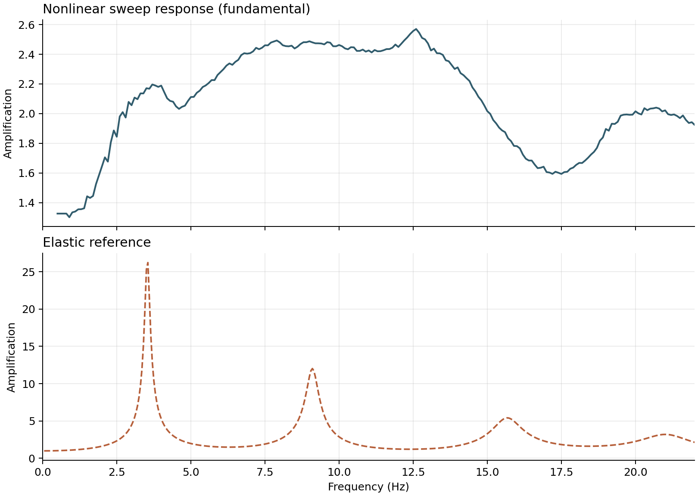
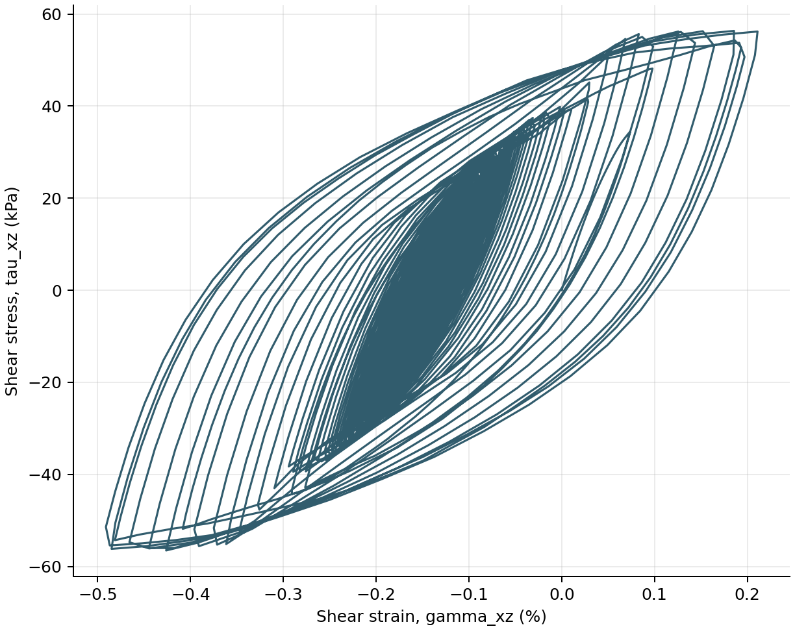

Nonlinear Layered Soil Column
This example extends the layered elastic column with staged
PressureDependMultiYield materials and amplitude-dependent sand response.
| Application | One-dimensional nonlinear site response |
| Material behavior | Pressure-dependent multi-yield sand plasticity |
| Analysis sequence | Elastic gravity, plastic staging, transient excitation |
| Nonlinear solution | Newton line search with Newmark integration |
| Output | Motion, stress, strain, and deformation histories |
| Execution | Serial |
Why Material Staging Matters
The soil must begin the earthquake analysis in equilibrium under its own weight. Activating plasticity before gravity is established can introduce unwanted yielding while the initial stress state is still forming.
Femora therefore separates initialization from dynamic response:
flowchart LR
A[Stage 0<br/>Elastic material] --> B[Establish<br/>gravity stress]
B --> C[Stage 1<br/>Activate yield surfaces]
C --> D[Re-equilibrate]
D --> E[Apply base motion]
E --> F[Nonlinear response]The geometry does not change between stages. Femora changes how the registered materials respond and then continues with the same assembled finite-element domain.
Model
The column retains the geometry and initial elastic stiffness of the earlier elastic benchmark. That makes differences in amplification and energy dissipation attributable to material nonlinearity rather than a changed mesh.
Soil Profile
| Stratum | Thickness (m) | \(G_{ref}\) (MPa) | Unit weight (kN/m\(^3\)) | Friction angle |
|---|---|---|---|---|
| Dense Ottawa | 10.0 | 145 | 19.9 | 40 degrees |
| Loose Ottawa | 6.0 | 75 | 19.1 | 29 degrees |
| Dense Monterey | 2.0 | 42 | 19.8 | 40 degrees |
The OpenSees material expects one consistent unit system. The source converts the tabulated moduli from Pa to kPa and density from kg/m\(^3\) to Mg/m\(^3\) before creating the material objects.
The frictional, contraction, dilation, and cyclic-mobility parameters use the OpenSees loose- and dense-sand families as starting values. They are not a substitute for calibration against laboratory or site-specific response data.
Drainage assumption
stdBrick elements with PressureDependMultiYield represent drained soil
response. Undrained or partially drained response requires coupled u-p
elements, pore-pressure degrees of freedom, and calibrated permeability.
Three materials, five mesh parts
The Dense Ottawa stratum is split into three mesh parts to control vertical discretization, but all three parts reference the same physical nonlinear material. Mesh organization and material identity remain separate choices.
Worked Workflow
Each physical stratum receives reference shear and bulk moduli, density, strength parameters, and twenty nested yield surfaces.
OUTPUT_DIR.mkdir(parents=True, exist_ok=True)
model = Model(
model_name="nonlinear_layered_soil_column",
model_path=str(OUTPUT_DIR.resolve()),
)
model.set_results_folder(RESULTS_DIR.resolve().as_posix())
materials = {}
elements = {}
for soil_name, properties in SOILS.items():
shear_modulus_si = properties["shear_modulus"]
poisson_ratio = properties["poisson_ratio"]
density_si = properties["unit_weight"] * 1_000.0 / GRAVITY
shear_modulus = shear_modulus_si / 1_000.0
bulk_modulus = (
2.0
* shear_modulus_si
* (1.0 + poisson_ratio)
/ (3.0 * (1.0 - 2.0 * poisson_ratio))
/ 1_000.0
)
density = density_si / 1_000.0
material = model.material.nd.pressure_depend_multi_yield(
user_name=f"{soil_name}_material",
nd=3,
rho=density,
refShearModul=shear_modulus,
refBulkModul=bulk_modulus,
frictionAng=properties["friction_angle"],
peakShearStra=PEAK_SHEAR_STRAIN,
refPress=REFERENCE_PRESSURE,
pressDependCoe=PRESSURE_DEPENDENCE,
PTAng=properties["phase_transformation_angle"],
contrac=properties["contraction"],
dilat1=properties["dilation_1"],
dilat2=properties["dilation_2"],
liquefac1=properties["liquefaction_1"],
liquefac2=properties["liquefaction_2"],
liquefac3=properties["liquefaction_3"],
noYieldSurf=20,
e=properties["void_ratio"],
)
materials[soil_name] = material
elements[soil_name] = model.element.brick.std(
ndof=3,
material=material,
b1=0.0,
b2=0.0,
b3=-GRAVITY * density,
)
Five independently discretized mesh parts form one merged laminar column.
rayleigh_damping = model.damping.frequency_rayleigh(
user_name="soil_damping",
f1=2.76,
f2=13.84,
damping_factor=0.03,
)
soil_region = model.region.element(
user_name="nonlinear_soil_column",
damping=rayleigh_damping,
)
z_bottom = -COLUMN_DEPTH
layer_names = []
for layer_name, soil_name, thickness, element_size in LAYERS:
model.meshpart.volume.uniform_rectangular_grid(
user_name=layer_name,
element=elements[soil_name],
region=soil_region,
x_min=0.0,
x_max=COLUMN_WIDTH,
y_min=0.0,
y_max=COLUMN_WIDTH,
z_min=z_bottom,
z_max=z_bottom + thickness,
nx=1,
ny=1,
nz=round(thickness / element_size),
)
layer_names.append(layer_name)
z_bottom += thickness
if abs(z_bottom) > 1.0e-9:
raise RuntimeError(f"Layer thicknesses terminate at z={z_bottom}, expected z=0")
model.assembler.create_section(
meshparts=layer_names,
num_partitions=0,
merge_points=True,
)
model.assembler.assemble(merge_points=True, progress_callback=lambda *_: None)
model.constraint.mp.laminar_boundary(
bounds=(-COLUMN_DEPTH + 0.1, 0.0),
dofs=[1, 2, 3],
direction=3,
)
model.constraint.sp.fix_macro_z_min(dofs=[1, 1, 1], tol=1.0e-6)
The frequency sweep drives the base while VTKHDF records nodal motion and six-component element stress and strain.
motion_directory = motions_dir()
excitation_series = model.time_series.path(
filePath=(motion_directory / "FrequencySweep.acc").resolve().as_posix(),
fileTime=(motion_directory / "FrequencySweep.time").resolve().as_posix(),
factor=GRAVITY,
)
uniform_excitation = model.pattern.uniform_excitation(
dof=1,
time_series=excitation_series,
)
response_recorder = model.recorder.vtkhdf(
file_base_name="site_response.vtkhdf",
resp_types=["accel", "disp", "vel", "stress3D6", "strain3D6"],
delta_t=0.01,
)
The process makes the elastic-to-plastic transition explicit. Newton line search handles the nonlinear equilibrium iterations during the response.
constraint_handler = model.analysis.constraint.transformation()
numberer = model.analysis.numberer.rcm()
system = model.analysis.system.bandgeneral()
gravity_algorithm = model.analysis.algorithm.newton()
dynamic_algorithm = model.analysis.algorithm.modifiednewton(factor_once=True)
test = model.analysis.test.normunbalance(tol=1.0e-7, max_iter=30)
dynamic_test = model.analysis.test.normdispincr(tol=1.0e-5, max_iter=5)
gravity_integrator = model.analysis.integrator.newmark(gamma=0.6, beta=0.3025)
dynamic_integrator = model.analysis.integrator.newmark(gamma=0.5, beta=0.25)
elastic_gravity = model.analysis.transient(
name="elastic_gravity",
constraint_handler=constraint_handler,
numberer=numberer,
system=system,
algorithm=gravity_algorithm,
test=test,
integrator=gravity_integrator,
dt=1.0,
num_steps=30,
)
plastic_equilibration = model.analysis.transient(
name="plastic_equilibration",
constraint_handler=constraint_handler,
numberer=numberer,
system=system,
algorithm=dynamic_algorithm,
test=test,
integrator=gravity_integrator,
dt=0.01,
num_steps=100,
)
dynamic_analysis = model.analysis.transient(
name="nonlinear_frequency_sweep",
constraint_handler=constraint_handler,
numberer=numberer,
system=system,
algorithm=dynamic_algorithm,
test=dynamic_test,
integrator=dynamic_integrator,
dt=DYNAMIC_DT,
final_time=DYNAMIC_FINAL_TIME,
max_retries=1,
num_sublevels=2,
num_substeps=2,
)
model.process.add_step(
model.actions.update_material_stage_to_elastic(),
"Set nonlinear materials to elastic stage 0",
)
model.process.add_step(elastic_gravity, "Establish gravity stress")
model.process.add_step(
model.actions.update_material_stage_to_plastic(),
"Activate plastic material stage 1",
)
model.process.add_step(plastic_equilibration, "Re-equilibrate after staging")
model.process.add_step(uniform_excitation, "Apply the frequency sweep")
model.process.add_step(response_recorder, "Record fields and material response")
model.process.add_step(model.actions.set_time(0.0), "Reset pseudo-time")
model.process.add_step(dynamic_analysis, "Run nonlinear site response")
Results And Post-Processing
Run the maintained companion after OpenSees completes:
def generate_results() -> tuple[Path, ...]:
"""Generate amplification and material-hysteresis plots."""
POSTPROCESS_DIR.mkdir(parents=True, exist_ok=True)
amplification_plot = POSTPROCESS_DIR / "nonlinear-amplification.png"
hysteresis_plot = POSTPROCESS_DIR / "shear-hysteresis.png"
result_pattern = str(RESULTS_DIR / "site_response*.vtkhdf")
with fm.results.open(result_pattern) as results:
surface = results.nearest_point(SURFACE_COORDINATE, tolerance=1.0e-6)
surface_acceleration = results.point_history(
"acceleration",
surface,
component="x",
)
numerical_frequency, nonlinear_tf = compute_sweep_amplification(
results.times,
surface_acceleration,
)
elastic_frequency, elastic_tf = compute_analytical_transfer_function()
save_amplification_plot(
numerical_frequency,
nonlinear_tf,
elastic_frequency,
elastic_tf,
amplification_plot,
)
mesh = results.mesh()
cell_centers = mesh.cell_centers().points
cell_index = int(
np.argmin(np.linalg.norm(cell_centers - HYSTERESIS_COORDINATE, axis=1))
)
shear_stress = results.cell_history(
"stress3D6",
cell_index,
component=5,
)
shear_strain = results.cell_history(
"strain3D6",
cell_index,
component=5,
)
save_hysteresis_plot(shear_strain, shear_stress, hysteresis_plot)
return amplification_plot, hysteresis_plot
def generate_animations() -> tuple[Path, ...]:
"""Generate the optional amplified nonlinear response animation."""
POSTPROCESS_DIR.mkdir(parents=True, exist_ok=True)
output_file = POSTPROCESS_DIR / "response.mp4"
result_pattern = str(RESULTS_DIR / "site_response*.vtkhdf")
with fm.results.open(result_pattern) as results:
save_response_movie(
results,
output_file,
deformation_scale=1.0,
stride=20,
frame_rate=50,
)
return (output_file,)
Complete post-processing source
# =============================================================================
# Femora: Fast Efficient Meta-modeling for OpenSees-based Resilience Analysis
# Copyright 2026 Amin Pakzad and Pedro Arduino
# Developed at the UW Geotechnical Lab
# SPDX-License-Identifier: Apache-2.0
# =============================================================================
# femora-colab-source: examples/site_response/layered_elastic_soil_column_postprocess.py
"""Plot and animate the nonlinear layered soil-column response."""
from __future__ import annotations
from pathlib import Path
import femora as fm
import matplotlib.pyplot as plt
import numpy as np
from scipy.signal import hilbert
from femora.utils.paths import motions_dir
if __package__:
from .layered_elastic_soil_column_postprocess import (
compute_analytical_transfer_function,
save_response_movie,
)
else:
from layered_elastic_soil_column_postprocess import (
compute_analytical_transfer_function,
save_response_movie,
)
OUTPUT_DIR = Path("example_outputs") / "nonlinear_layered_soil_column"
RESULTS_DIR = OUTPUT_DIR / "results"
POSTPROCESS_DIR = OUTPUT_DIR / "post_processing"
SURFACE_COORDINATE = np.array([0.0, 0.0, 0.0])
HYSTERESIS_COORDINATE = np.array([0.5, 0.5, -5.0])
MAX_FREQUENCY = 22.0
GRAVITY = 9.81
def compute_sweep_amplification(
response_time: np.ndarray,
relative_surface_acceleration: np.ndarray,
) -> tuple[np.ndarray, np.ndarray]:
"""Estimate the fundamental response locally along the frequency sweep."""
motion_directory = motions_dir()
input_time = np.loadtxt(motion_directory / "FrequencySweep.time")
input_acceleration = (
np.loadtxt(motion_directory / "FrequencySweep.acc") * GRAVITY
)
base_acceleration = np.interp(
response_time,
input_time,
input_acceleration,
)
surface_acceleration = relative_surface_acceleration + base_acceleration
analytic_input = hilbert(base_acceleration)
phase = np.unwrap(np.angle(analytic_input))
instantaneous_frequency = np.gradient(phase, response_time) / (2.0 * np.pi)
envelope = np.abs(analytic_input)
edge_margin = min(1.0, 0.05 * float(np.ptp(response_time)))
valid = (
(envelope > 0.1 * float(np.max(envelope)))
& (response_time > response_time[0] + edge_margin)
& (response_time < response_time[-1] - edge_margin)
& (instantaneous_frequency >= 0.5)
& (instantaneous_frequency <= MAX_FREQUENCY)
)
valid_indices = np.flatnonzero(valid)
if valid_indices.size == 0:
raise ValueError("The recorded interval does not contain the frequency sweep")
frequencies = np.arange(0.5, MAX_FREQUENCY + 0.05, 0.1)
amplification = np.full(frequencies.shape, np.nan, dtype=float)
for index, frequency in enumerate(frequencies):
center = valid_indices[
np.argmin(
np.abs(instantaneous_frequency[valid_indices] - frequency)
)
]
window_duration = float(np.clip(4.0 / frequency, 1.0, 4.0))
window = np.abs(response_time - response_time[center]) <= window_duration / 2.0
local_time = response_time[window] - response_time[center]
basis = np.column_stack(
(
np.cos(phase[window]),
np.sin(phase[window]),
np.ones(np.count_nonzero(window)),
local_time,
)
)
base_coefficients = np.linalg.lstsq(
basis,
base_acceleration[window],
rcond=None,
)[0]
surface_coefficients = np.linalg.lstsq(
basis,
surface_acceleration[window],
rcond=None,
)[0]
base_amplitude = np.hypot(*base_coefficients[:2])
if base_amplitude > np.finfo(float).eps:
amplification[index] = (
np.hypot(*surface_coefficients[:2]) / base_amplitude
)
return frequencies, amplification
def save_amplification_plot(
numerical_frequency: np.ndarray,
nonlinear_transfer_function: np.ndarray,
elastic_frequency: np.ndarray,
elastic_transfer_function: np.ndarray,
output_file: Path,
) -> None:
"""Compare nonlinear amplification with the elastic reference profile."""
mask = (numerical_frequency > 0.0) & (numerical_frequency <= MAX_FREQUENCY)
figure, axes = plt.subplots(
2,
1,
figsize=(9.0, 6.4),
sharex=True,
constrained_layout=True,
)
axes[0].plot(
numerical_frequency[mask],
np.abs(nonlinear_transfer_function[mask]),
color="#315c6d",
linewidth=1.6,
)
axes[0].set_ylabel("Amplification")
axes[0].set_title("Nonlinear sweep response (fundamental)", loc="left")
axes[1].plot(
elastic_frequency,
np.abs(elastic_transfer_function),
color="#b65f3a",
linewidth=1.5,
linestyle="--",
)
axes[1].set(
xlabel="Frequency (Hz)",
ylabel="Amplification",
xlim=(0.0, MAX_FREQUENCY),
)
axes[1].set_title("Elastic reference", loc="left")
for axis in axes:
axis.grid(alpha=0.25)
axis.spines[["top", "right"]].set_visible(False)
figure.savefig(output_file, dpi=180)
plt.close(figure)
def save_hysteresis_plot(
shear_strain: np.ndarray,
shear_stress: np.ndarray,
output_file: Path,
) -> None:
"""Plot the representative xz shear stress-strain response."""
figure, axis = plt.subplots(figsize=(6.8, 5.4), constrained_layout=True)
axis.plot(
100.0 * shear_strain,
shear_stress,
color="#315c6d",
linewidth=1.25,
)
axis.set(xlabel="Shear strain, gamma_xz (%)", ylabel="Shear stress, tau_xz (kPa)")
axis.grid(alpha=0.25)
axis.spines[["top", "right"]].set_visible(False)
figure.savefig(output_file, dpi=180)
plt.close(figure)
def generate_results() -> tuple[Path, ...]:
"""Generate amplification and material-hysteresis plots."""
POSTPROCESS_DIR.mkdir(parents=True, exist_ok=True)
amplification_plot = POSTPROCESS_DIR / "nonlinear-amplification.png"
hysteresis_plot = POSTPROCESS_DIR / "shear-hysteresis.png"
result_pattern = str(RESULTS_DIR / "site_response*.vtkhdf")
with fm.results.open(result_pattern) as results:
surface = results.nearest_point(SURFACE_COORDINATE, tolerance=1.0e-6)
surface_acceleration = results.point_history(
"acceleration",
surface,
component="x",
)
numerical_frequency, nonlinear_tf = compute_sweep_amplification(
results.times,
surface_acceleration,
)
elastic_frequency, elastic_tf = compute_analytical_transfer_function()
save_amplification_plot(
numerical_frequency,
nonlinear_tf,
elastic_frequency,
elastic_tf,
amplification_plot,
)
mesh = results.mesh()
cell_centers = mesh.cell_centers().points
cell_index = int(
np.argmin(np.linalg.norm(cell_centers - HYSTERESIS_COORDINATE, axis=1))
)
shear_stress = results.cell_history(
"stress3D6",
cell_index,
component=5,
)
shear_strain = results.cell_history(
"strain3D6",
cell_index,
component=5,
)
save_hysteresis_plot(shear_strain, shear_stress, hysteresis_plot)
return amplification_plot, hysteresis_plot
def generate_animations() -> tuple[Path, ...]:
"""Generate the optional amplified nonlinear response animation."""
POSTPROCESS_DIR.mkdir(parents=True, exist_ok=True)
output_file = POSTPROCESS_DIR / "response.mp4"
result_pattern = str(RESULTS_DIR / "site_response*.vtkhdf")
with fm.results.open(result_pattern) as results:
save_response_movie(
results,
output_file,
deformation_scale=1.0,
stride=20,
frame_rate=50,
)
return (output_file,)
def main() -> None:
"""Generate all documented post-processing outputs."""
generated = (*generate_results(), *generate_animations())
print("Post-processing outputs:")
for output in generated:
print(f" {output.resolve()}")
if __name__ == "__main__":
main()
nonlinear-amplification.png follows the frequency sweep in time and fits
the fundamental surface response locally at each excitation frequency. It
is not a linear transfer function: yielding generates harmonics and makes
the response depend on loading history, so its peaks are expected to be
broader and lower than the elastic reference.

shear-hysteresis.png extracts the \(xz\) stress-strain history from a
representative Loose Ottawa element. Closed loops show hysteretic energy
dissipation that is absent from the elastic benchmark.

The optional response.mp4 animation shows amplified horizontal
deformation at physical scale while preserving the physical-stratum colors
used throughout the site-response examples.
Run The Example
Use Open in Colab for the complete browser workflow. A nonlinear analysis is more expensive than the elastic examples because equilibrium must be checked at every time step.
For local export:
To execute OpenSees as well:
$env:FEMORA_OPENSEES = "D:\path\to\OpenSees.exe"
python examples/site_response/nonlinear_layered_soil_column.py
The solver run writes VTKHDF fields under
example_outputs/nonlinear_layered_soil_column/results/. Femora reports the
analysis step immediately if nonlinear equilibrium cannot be reached.
Complete source
# =============================================================================
# Femora: Fast Efficient Meta-modeling for OpenSees-based Resilience Analysis
# Copyright 2026 Amin Pakzad and Pedro Arduino
# Developed at the UW Geotechnical Lab
# SPDX-License-Identifier: Apache-2.0
# =============================================================================
# femora-colab-input: examples/inputs/motions/FrequencySweep.acc
# femora-colab-input: examples/inputs/motions/FrequencySweep.time
# femora-postprocess: examples/site_response/nonlinear_layered_soil_column_postprocess.py
# %% [markdown]
# # Nonlinear Layered Soil Column
#
# Build a staged PressureDependMultiYield soil profile, establish gravity in
# its elastic state, activate plasticity, and run transient site response.
# %%
"""Run a staged nonlinear layered-soil analysis with the current Femora API."""
from __future__ import annotations
import os
from pathlib import Path
from femora import Model, runtime
from femora.utils.paths import motions_dir
OUTPUT_DIR = Path("example_outputs") / "nonlinear_layered_soil_column"
RESULTS_DIR = OUTPUT_DIR / "results"
OPENSEES = os.environ.get("FEMORA_OPENSEES")
PLOT_MODEL = False
COLUMN_WIDTH = 1.0
COLUMN_DEPTH = 18.0
GRAVITY = 9.81
DYNAMIC_DT = 0.001
DYNAMIC_FINAL_TIME = 40.0
PEAK_SHEAR_STRAIN = 0.1
REFERENCE_PRESSURE = 80.0
PRESSURE_DEPENDENCE = 0.5
SOILS = {
"dense_ottawa": {
"shear_modulus": 145.0e6,
"unit_weight": 19.9,
"poisson_ratio": 0.3,
"friction_angle": 40.0,
"phase_transformation_angle": 27.0,
"contraction": 0.03,
"dilation_1": 0.8,
"dilation_2": 5.0,
"liquefaction_1": 0.0,
"liquefaction_2": 0.0,
"liquefaction_3": 0.0,
"void_ratio": 0.45,
},
"loose_ottawa": {
"shear_modulus": 75.0e6,
"unit_weight": 19.1,
"poisson_ratio": 0.3,
"friction_angle": 29.0,
"phase_transformation_angle": 29.0,
"contraction": 0.21,
"dilation_1": 0.0,
"dilation_2": 0.0,
"liquefaction_1": 10.0,
"liquefaction_2": 0.02,
"liquefaction_3": 1.0,
"void_ratio": 0.85,
},
"dense_monterey": {
"shear_modulus": 42.0e6,
"unit_weight": 19.8,
"poisson_ratio": 0.3,
"friction_angle": 40.0,
"phase_transformation_angle": 27.0,
"contraction": 0.03,
"dilation_1": 0.8,
"dilation_2": 5.0,
"liquefaction_1": 0.0,
"liquefaction_2": 0.0,
"liquefaction_3": 0.0,
"void_ratio": 0.45,
},
}
LAYERS = [
("dense_ottawa_lower", "dense_ottawa", 2.6, 1.3),
("dense_ottawa_middle", "dense_ottawa", 2.4, 1.2),
("dense_ottawa_upper", "dense_ottawa", 5.0, 1.0),
("loose_ottawa", "loose_ottawa", 6.0, 0.5),
("dense_monterey", "dense_monterey", 2.0, 0.5),
]
# %% [markdown]
# ## Define the nonlinear materials
#
# Femora uses a kN-m-s unit system here. Reference moduli are therefore
# converted from Pa to kPa and density from kg/m3 to Mg/m3.
# %%
OUTPUT_DIR.mkdir(parents=True, exist_ok=True)
model = Model(
model_name="nonlinear_layered_soil_column",
model_path=str(OUTPUT_DIR.resolve()),
)
model.set_results_folder(RESULTS_DIR.resolve().as_posix())
materials = {}
elements = {}
for soil_name, properties in SOILS.items():
shear_modulus_si = properties["shear_modulus"]
poisson_ratio = properties["poisson_ratio"]
density_si = properties["unit_weight"] * 1_000.0 / GRAVITY
shear_modulus = shear_modulus_si / 1_000.0
bulk_modulus = (
2.0
* shear_modulus_si
* (1.0 + poisson_ratio)
/ (3.0 * (1.0 - 2.0 * poisson_ratio))
/ 1_000.0
)
density = density_si / 1_000.0
material = model.material.nd.pressure_depend_multi_yield(
user_name=f"{soil_name}_material",
nd=3,
rho=density,
refShearModul=shear_modulus,
refBulkModul=bulk_modulus,
frictionAng=properties["friction_angle"],
peakShearStra=PEAK_SHEAR_STRAIN,
refPress=REFERENCE_PRESSURE,
pressDependCoe=PRESSURE_DEPENDENCE,
PTAng=properties["phase_transformation_angle"],
contrac=properties["contraction"],
dilat1=properties["dilation_1"],
dilat2=properties["dilation_2"],
liquefac1=properties["liquefaction_1"],
liquefac2=properties["liquefaction_2"],
liquefac3=properties["liquefaction_3"],
noYieldSurf=20,
e=properties["void_ratio"],
)
materials[soil_name] = material
elements[soil_name] = model.element.brick.std(
ndof=3,
material=material,
b1=0.0,
b2=0.0,
b3=-GRAVITY * density,
)
# %% [markdown]
# ## Build and assemble the layered mesh
# %%
rayleigh_damping = model.damping.frequency_rayleigh(
user_name="soil_damping",
f1=2.76,
f2=13.84,
damping_factor=0.03,
)
soil_region = model.region.element(
user_name="nonlinear_soil_column",
damping=rayleigh_damping,
)
z_bottom = -COLUMN_DEPTH
layer_names = []
for layer_name, soil_name, thickness, element_size in LAYERS:
model.meshpart.volume.uniform_rectangular_grid(
user_name=layer_name,
element=elements[soil_name],
region=soil_region,
x_min=0.0,
x_max=COLUMN_WIDTH,
y_min=0.0,
y_max=COLUMN_WIDTH,
z_min=z_bottom,
z_max=z_bottom + thickness,
nx=1,
ny=1,
nz=round(thickness / element_size),
)
layer_names.append(layer_name)
z_bottom += thickness
if abs(z_bottom) > 1.0e-9:
raise RuntimeError(f"Layer thicknesses terminate at z={z_bottom}, expected z=0")
model.assembler.create_section(
meshparts=layer_names,
num_partitions=0,
merge_points=True,
)
model.assembler.assemble(merge_points=True, progress_callback=lambda *_: None)
model.constraint.mp.laminar_boundary(
bounds=(-COLUMN_DEPTH + 0.1, 0.0),
dofs=[1, 2, 3],
direction=3,
)
model.constraint.sp.fix_macro_z_min(dofs=[1, 1, 1], tol=1.0e-6)
# %% [markdown]
# ## Define excitation and nonlinear output
# %%
motion_directory = motions_dir()
excitation_series = model.time_series.path(
filePath=(motion_directory / "FrequencySweep.acc").resolve().as_posix(),
fileTime=(motion_directory / "FrequencySweep.time").resolve().as_posix(),
factor=GRAVITY,
)
uniform_excitation = model.pattern.uniform_excitation(
dof=1,
time_series=excitation_series,
)
response_recorder = model.recorder.vtkhdf(
file_base_name="site_response.vtkhdf",
resp_types=["accel", "disp", "vel", "stress3D6", "strain3D6"],
delta_t=0.01,
)
# %% [markdown]
# ## Stage gravity and activate plasticity
#
# Stage 0 establishes geostatic stress with elastic material response. Stage 1
# activates the yield surfaces, followed by a short re-equilibration analysis.
# %%
constraint_handler = model.analysis.constraint.transformation()
numberer = model.analysis.numberer.rcm()
system = model.analysis.system.bandgeneral()
gravity_algorithm = model.analysis.algorithm.newton()
dynamic_algorithm = model.analysis.algorithm.modifiednewton(factor_once=True)
test = model.analysis.test.normunbalance(tol=1.0e-7, max_iter=30)
dynamic_test = model.analysis.test.normdispincr(tol=1.0e-5, max_iter=5)
gravity_integrator = model.analysis.integrator.newmark(gamma=0.6, beta=0.3025)
dynamic_integrator = model.analysis.integrator.newmark(gamma=0.5, beta=0.25)
elastic_gravity = model.analysis.transient(
name="elastic_gravity",
constraint_handler=constraint_handler,
numberer=numberer,
system=system,
algorithm=gravity_algorithm,
test=test,
integrator=gravity_integrator,
dt=1.0,
num_steps=30,
)
plastic_equilibration = model.analysis.transient(
name="plastic_equilibration",
constraint_handler=constraint_handler,
numberer=numberer,
system=system,
algorithm=dynamic_algorithm,
test=test,
integrator=gravity_integrator,
dt=0.01,
num_steps=100,
)
dynamic_analysis = model.analysis.transient(
name="nonlinear_frequency_sweep",
constraint_handler=constraint_handler,
numberer=numberer,
system=system,
algorithm=dynamic_algorithm,
test=dynamic_test,
integrator=dynamic_integrator,
dt=DYNAMIC_DT,
final_time=DYNAMIC_FINAL_TIME,
max_retries=1,
num_sublevels=2,
num_substeps=2,
)
model.process.add_step(
model.actions.update_material_stage_to_elastic(),
"Set nonlinear materials to elastic stage 0",
)
model.process.add_step(elastic_gravity, "Establish gravity stress")
model.process.add_step(
model.actions.update_material_stage_to_plastic(),
"Activate plastic material stage 1",
)
model.process.add_step(plastic_equilibration, "Re-equilibrate after staging")
model.process.add_step(uniform_excitation, "Apply the frequency sweep")
model.process.add_step(response_recorder, "Record fields and material response")
model.process.add_step(model.actions.set_time(0.0), "Reset pseudo-time")
model.process.add_step(dynamic_analysis, "Run nonlinear site response")
# %% [markdown]
# ## Export and optionally execute
# %%
tcl_file = OUTPUT_DIR / "nonlinear_layered_soil_column.tcl"
model.export_to_tcl(
filename=str(tcl_file.resolve()),
progress_callback=lambda *_: None,
)
print("\nNonlinear layered soil column")
print(f" Nodes: {model.assembled_mesh.n_points}")
print(f" Elements: {model.assembled_mesh.n_cells}")
print(f" Materials: {len(materials)} nonlinear soil materials")
print(f" Tcl model: {tcl_file.resolve()}")
if OPENSEES is None:
print(" Solver: not run (set FEMORA_OPENSEES to run OpenSees)")
else:
runtime.run(
tcl_file,
executable=OPENSEES,
cwd=OUTPUT_DIR.resolve(),
)
print(" Solver: completed")
# %% [markdown]
# ## Optional visualization
# %%
if PLOT_MODEL:
model.assembler.plot(show_edges=True, scalars="MaterialTag")